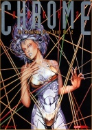

|  | Technical data |
| Supplement for the role-playing game Cyberpunk 2020, published by R. Talsorian Games (1992) | |
| Theme | Fall-Winter catalog |
| Background quality | 4 / 5 |
| Scenario quality | - |
| Rules quality | 3 / 5 |
| Artworks quality | 3 / 5 |
| Writing quality | 3 / 5 |
This is the second volume of the Chromebook series. On the menu : cybernetics, hi-tech equipment, weapons, teams of street professionals and vehicles. Let's add to this two originalities : full body replacement, where the cyborg reaches its apogee in a brutal world, and exotic implants or how to transform into an animal-human hybrid. The most of this supplement lies in the originality of certain items (shape memory blade, remote taser by air ionization, etc) whose technological verisimilitude is interesting. We were spared softwares, which is not a bad thing, and despite an irregularity in the interest of the material presented as in the illustrations, this supplement is in my opinion the best of the four Chromebooks.
{kind=link}